常夏的海岛
热带气候带来充足降雨与四季常夏的风景。城市街道、森林步道与海滨沙滩，共同构成乐园的日常。
WELCOME TO ELYSION
在常夏的海岛上，让魔法、研究与日常生活相遇。
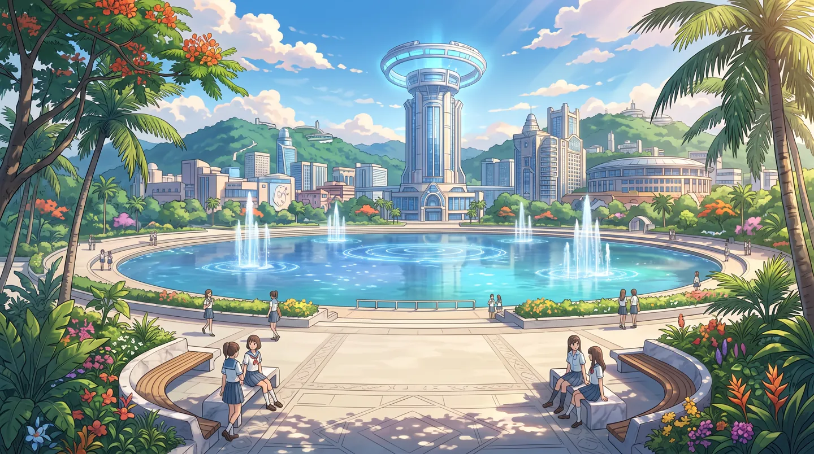
乐园坐落于科技与魔法高度发达的世界，是世界魔女协会（WWO）倡导建立的独立人工海岛都市。爱心形的岛屿四面环海，由高级生物论人工智能小艾统一管理，教学、科研与城市生活在这里紧密相连。
这里是纯女性的多种族社区。人类、血族、精灵族、魔族与亚人族的魔女共同生活，出身与身份不决定一个人在乐园中的位置。乐园受 WWO 监管与保护，不介入各国之间的政治斗争。
热带气候带来充足降雨与四季常夏的风景。城市街道、森林步道与海滨沙滩，共同构成乐园的日常。
魔导人偶参与生产，量子魔法计算支持城市调度，虚拟现实连接教学与娱乐。魔力是都市运行的重要基础。
「真·乐园计划」的全名为「跨时空意识映射都市计划」。借助 AI 与意识映射，来自未来的魔女也能将意识投影至魔导人偶，亲身体验乐园。
EXPLORE THE ISLAND
从学院的长廊出发，穿过城市，走向森林与海。
共 16 处区域与设施
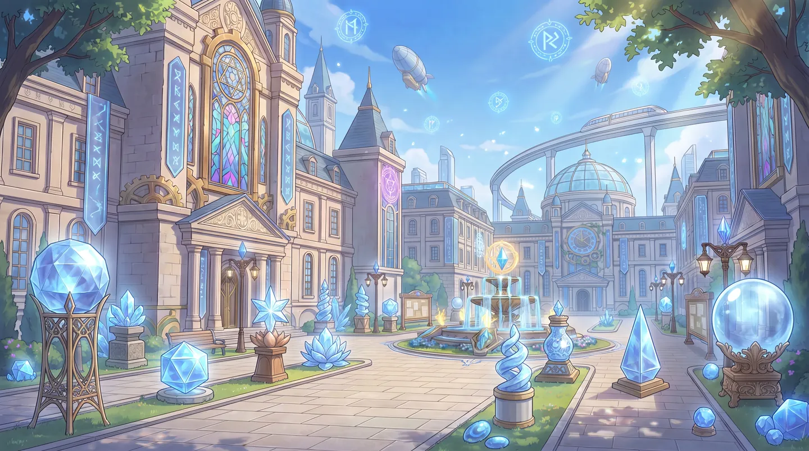
综合楼与七大学院组成学习和研究的核心。学院间由绿化步道与空中廊桥相连，步行穿越学院区约需二十分钟。
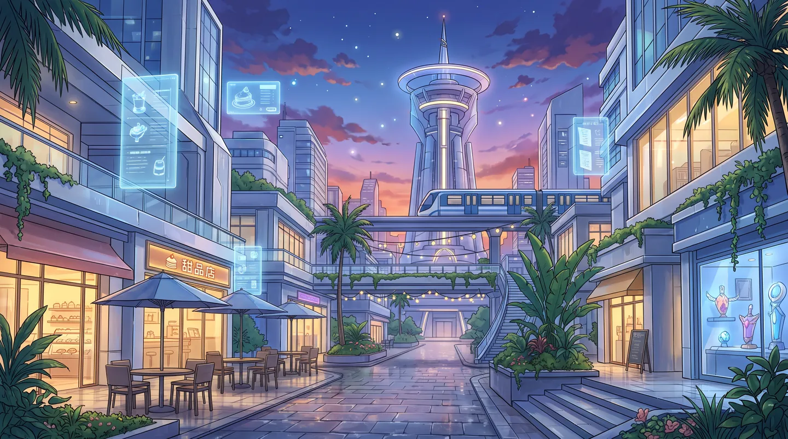
美食街、购物广场与各类店铺汇集于此。毕业生经营的餐饮店、喷泉广场和文化设施，让商业区成为课后的相聚之处。
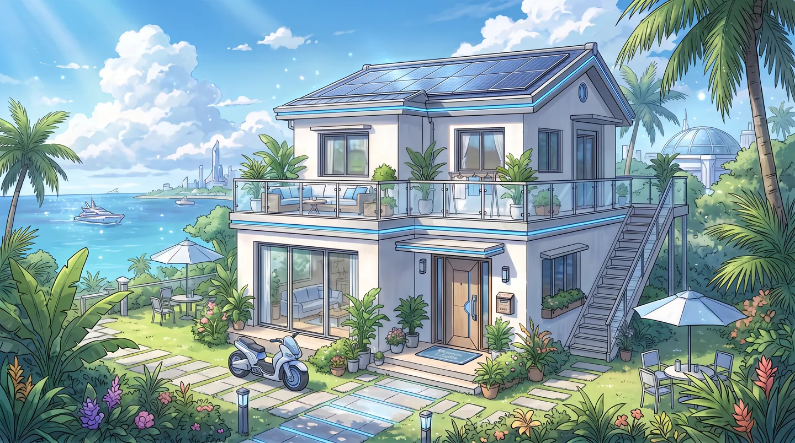
位于海岛东部，划分为公共宿舍区、情侣宿舍区与高级住宅区。内部配有免费餐厅、公共浴室和洗衣房。
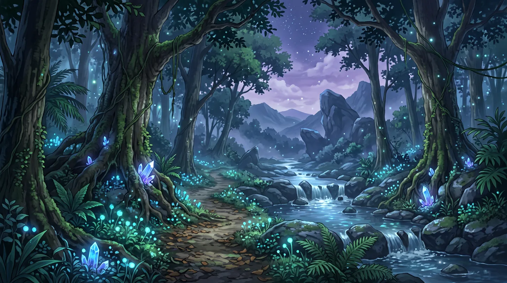
位于海岛西部，面积约三百平方公里。林间不设人造照明，夜光草与发光水晶照亮步道，深处还有清澈的镜湖。
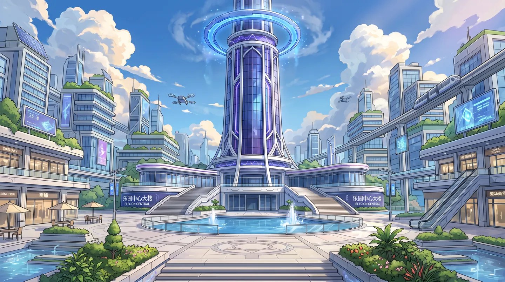
商业区中央约一百二十米高的白色尖塔，承担行政、档案与 WWO 联络职能。地下六层结构中设有小艾计算中枢。
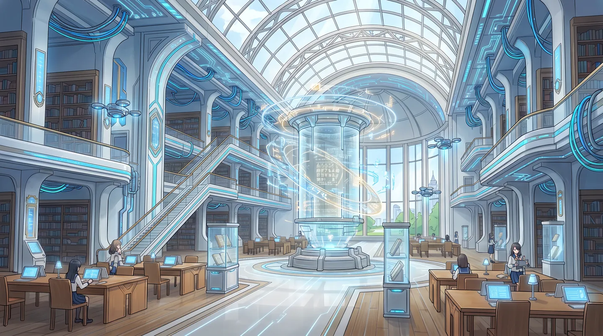
学院区与商业区交界处的六层环形建筑。提供数字文献、自习室和预约研究室；禁书区须由导师或小艾授权进入。全年无休。
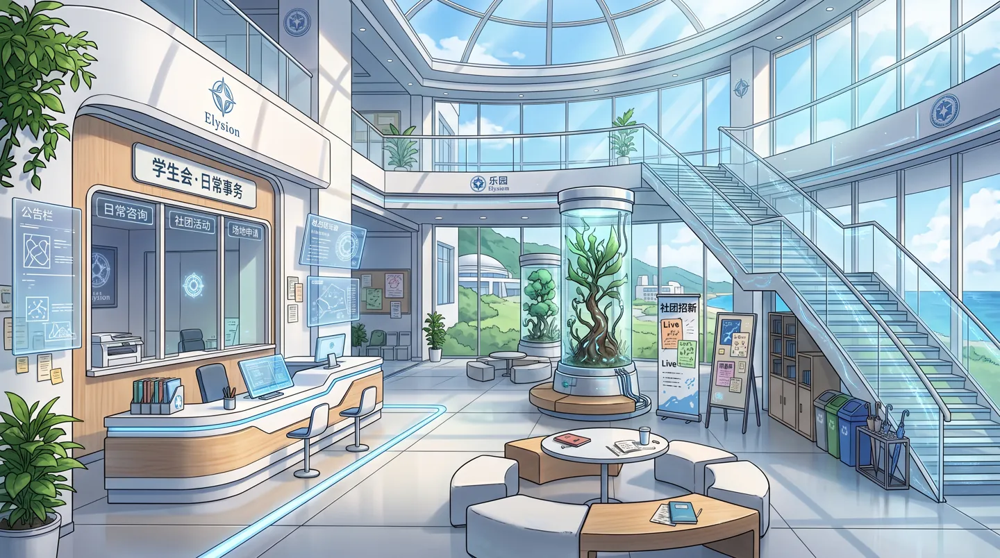
十层综合事务大楼，设有社团活动室、学生会办公区与多功能厅。顶层的「圆桌之间」是十二圆桌专属议事厅。
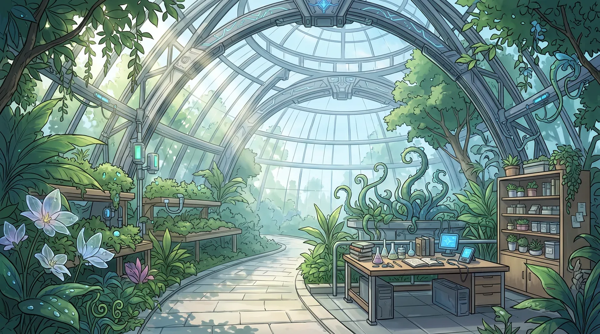
由炼金食品系与生命科学系共同管理，分为温带、热带、水生与实验温室。对学生开放参观，采摘需获得许可。
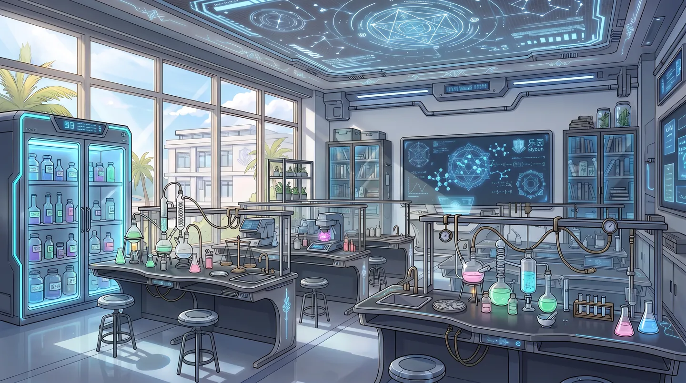
学院教学实验室、课题组专属实验室与公共实验平台构成三级体系。大型分析与测试设备面向研究者预约使用。
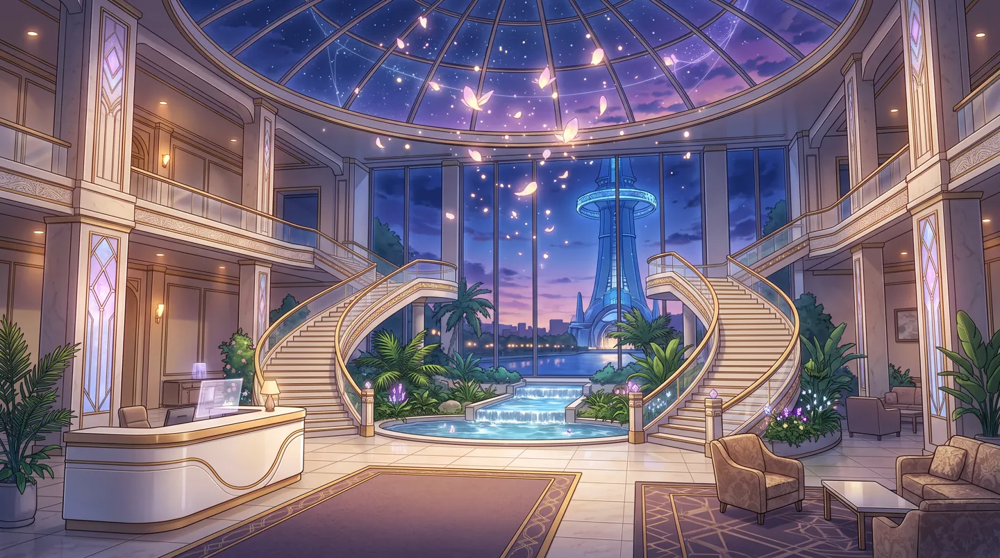
中心大楼东侧的十五层酒店，接待来访学者，也向学生与住民提供短期入住。顶层旋转餐厅可俯瞰全岛，需提前一个月预约。
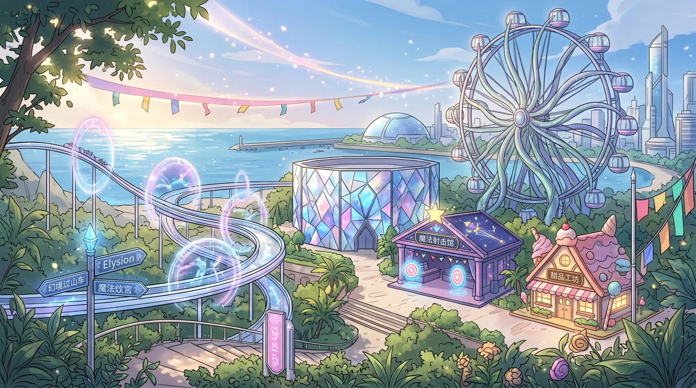
位于商业区与森林区交界处。魔法驱动的旋转杯、幻境过山车、镜面迷宫与魔法射击馆提供不同的游玩体验。入园免费，项目另付点数。
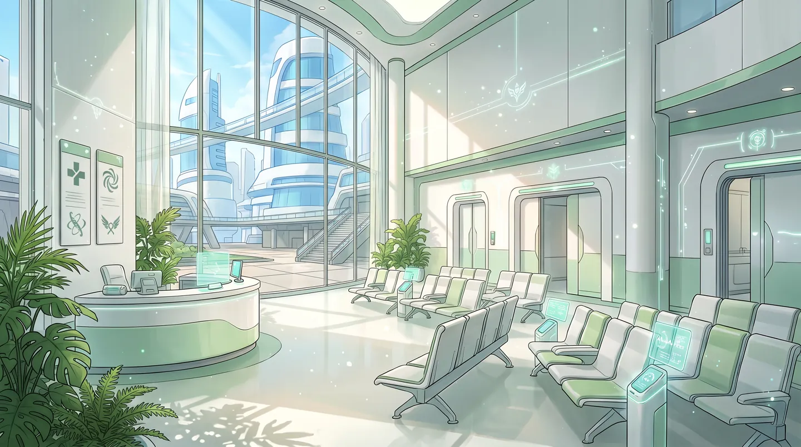
学院区东侧的三层白色建筑，负责魔法伤害治疗、炼金事故急救与常规体检，二层设有心理咨询室。
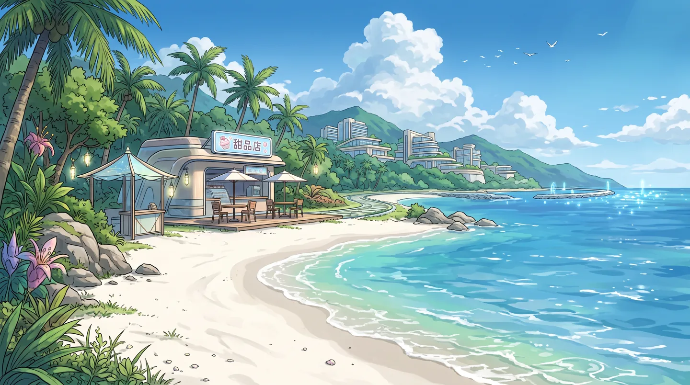
细白沙滩与常年温暖的海水环绕岛屿。近岸设有浅水安全区、魔导浮标、冲淋点和饮品摊，也是运动会海滨项目的场地。
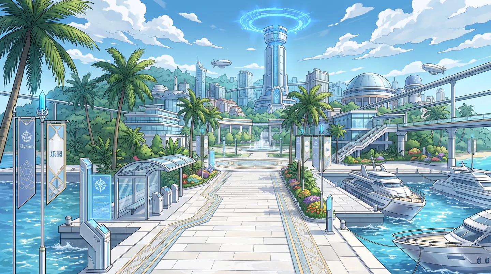
位于海岛南部，是乐园唯一的对外接口。客运码头接送新生与授权访客，货运码头由魔导人偶处理物资运输。
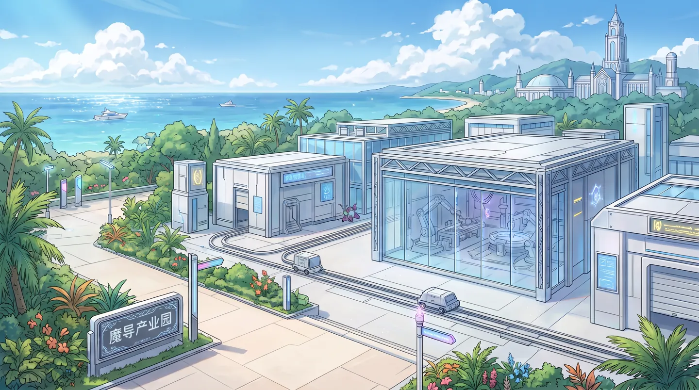
位于海岛东北角，承担试制、小批量生产与工程验证。学院的研究成果在此完成从图纸、样机到产品的转化。
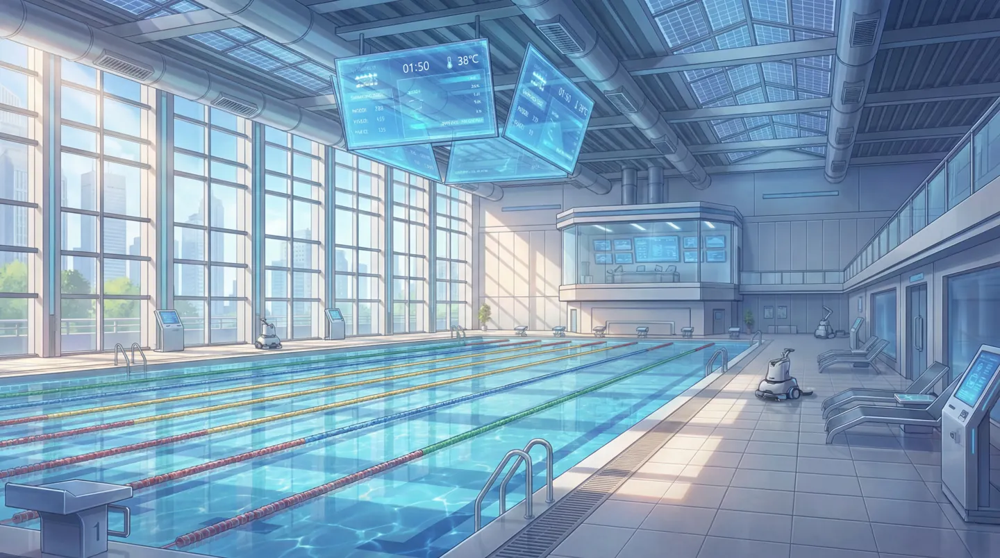
综合体育馆、训练型体育馆与实战专用馆分别服务赛事、日常锻炼与魔法对抗。实战馆须在教员监督下使用。
YOUR FIRST WEEK
从一封邀请函开始，认识这座海岛，也重新认识自己。
乐园面向符合条件、愿意学习与成长的魔女招生，不以出身与身份作为选拔标准。申请经小艾综合筛选后，符合条件者将收到正式邀请函；确认愿意进入乐园生活后，即可随入学季游轮抵岛。
新生课程把参观、适应与测验安排在一起，帮助每位新生熟悉乐园。
游轮在港口靠岸，自愿担任学姐的高等部学生在人工湖一带迎接新生，陪同前往宿舍。
由小艾介绍乐园的基本制度，阅读并签署《乐园生活知情协议书》，了解学习、生活与个人义务。
完成入学体检，参加新生课程与校园参观，逐步熟悉公共设施、个人终端和乐园的日常规则。
入学测验由笔试和实战两部分组成，用于了解个人基础，并为后续的培养建议提供依据。
新生课程结束后统一领取初始衣物，完成身份转换，在学姐与小艾的帮助下开始正式学习。
LEARNING & RESEARCH
从共同的基础出发，走向各自热爱的研究。
通识教育与魔法基础并重，弥补不同背景的基础差距。学习进度由个人能力决定，基础扎实者可以更早进入后续阶段。
选定专业方向，在各大学院学习重要的基础专业课。修满课程学分后，可继续进入高等部。
跟随导师加入课题组，以独立研究与实战为主，同时参与助教等工作，是乐园科研的核心力量。
初等部必修，涵盖数理基础、魔法基础、实战基础与乐园规章制度。
由七大学院开设，帮助学生掌握专业方向的核心知识与实验方法。
导师直接授课的小班课程，五人即可开班，每班不超过十五人，鼓励跨学院选课。
专业用于组织课程，学生可以根据兴趣与学习能力调整方向，也能选修其他学院的课程。选课之后，需要完成相应考核与学分要求。
每学期、每门课程设置期末考试，优秀成绩可获得点数奖励。多次未通过课程可能收到学业预警；表现特别优异者可参加特殊考核。
初等部专业科学生即可向心仪导师提交申请，师生双向选择。修满学分并完成导师接收后，可进入高等部继续研究；高等部入学不要求额外的论文考核。
课题组由导师、高等部学生与可能参与的初等部学生组成。项目可来自乐园运营委托、WWO 合作、自主探索或跨学院联合研究，没有统一的硬性项目指标。
成果可以发表于乐园主刊《Elysion》或 WWO 学科期刊。魔导产品与技术专利经小艾审核注册后，可以获得成果分红。
获得学士学位后，可以继续升入高等部、转为乐园住民，或带着学位离开海岛。
取得硕士或博士学位后，可以成为专业住民、留任讲师、加入 WWO，或前往各大陆发展。
THE SEVEN ACADEMIES
七种观察魔法的方式，无数条可以交汇的道路。
乐园最大的工科学院，让魔法设计沿着工程链路变成真正的产品。
魔导器工学、魔导自动人偶、魔导虚拟现实、魔导能源、飞行器设计
银灰金属外观，楼内布满齿轮、管道与魔力回路。
从古典炼金理论走向魔药、食品与生命科学，也以实验事故频繁闻名。
理论炼金术、魔药学、炼金工程、炼金食品、生命科学
古典石质城堡外观，周围设有魔法防护罩。
研究魔法本身的底层规律，为其他学院的应用提供基础。
数学与基础数学、理论魔法学、魔法阵学、元素魔法学、圣光与祝福魔法、诅咒与亡灵魔法、混沌魔法学、心理与梦境魔法学、星月魔法
白色塔楼群，顶部设有天文观测台与星月魔法阵。
探索天人时代文明、魔法语言与知识的保存方式。
魔法史学、魔法语言学、魔法伦理学、魔导书管理
浅色石材拱廊与通透玻璃墙相接的庭院式建筑。
以 AI 研究为核心，让计算机科学与魔法产生新的交叉。
软件工程、网络信息安全、自动化魔导工程、量子魔法计算、魔导人工智能
玻璃幕墙现代建筑，为服务器维持常年恒温。
为有艺术追求的魔女提供创作平台，让魔法成为表达与设计的媒介。
魔法与美学融合的艺术创作与设计
外墙为可变魔法投影幕，实时轮播学生作品。
研究这座特殊都市如何运转，也为产业、公共事务和活动提供支持。
乐园经济学、魔法产业管理、公共管理、活动策划
朴素实用、低调精致的办公楼式建筑。
LIFE TOGETHER
日常事务由学生参与，公共生活由大家共同塑造。
小艾维护乐园的底层规则、安全与城市运行。与学生生活直接相关的日常事务，则由学生自治体系处理：魔女十二圆桌负责最高议事与监督，学生会承担行政执行。
具有提案、重大决策否决、监督与应急裁决权。每学期末产生二十四名候选人，经小艾设计的综合考验选出席位，连续在任一般不超过一学年。
处理活动、社团、生活权益与学术支持。每年春季和秋季学期末各选举一次，全体学生一人一票，任期半学年，可连任一次。
统筹各部门，对外联络，与小艾沟通，并向十二圆桌述职。
策划学园祭、季度活动、迎新晚会与社团展示日。
负责社团注册、评级、经费审核与场地协调。
收集食宿反馈，跟进设施报修、投诉与学生纠纷调解。
组织复习讲座、跨院沙龙与学姐辅导匹配。
发布活动信息，运营校园广播、投影海报与 ELO 公告。
至少三名学生与一名指导员即可发起申请，指导员可以由高等部学生或教师担任。申请材料包含社团名称、宗旨、学期活动计划、组织架构及指导教员确认函。
社团管理部在一周内审核，通过后进入一学期试运行。试用期活动经费按正式标准的六成发放，期满后依据活动记录与成员反馈决定是否转正。
每个学期开学第一周为招新周，地点设在社团活动大楼一楼大厅与前广场。错过招新周，也可以随时联系社团加入。
| 评级 | 基础经费 / 学期 | 活动空间 | 主要条件 |
|---|---|---|---|
| S 级 | 8,000 点 | 60 m²，额外空间优先 | 三十人以上，举办校级活动，评价优秀且综合评定前 10% |
| A 级 | 4,000 点 | 40 m² 标准活动室 | 十五人以上，记录完整，无违规 |
| B 级 | 1,500 点 | 20 m² 小活动室 | 五人以上，正常开展活动 |
| C 级 | 500 点 | 预约公共空间 | 成员不足或活动不活跃 |
| 试用社团 | 900 点 | 临时 20 m² 活动室 | 尚在试运行阶段 |
MAKE YOURSELF AT HOME
宿舍不只是休息的地方，也是属于自己的家。
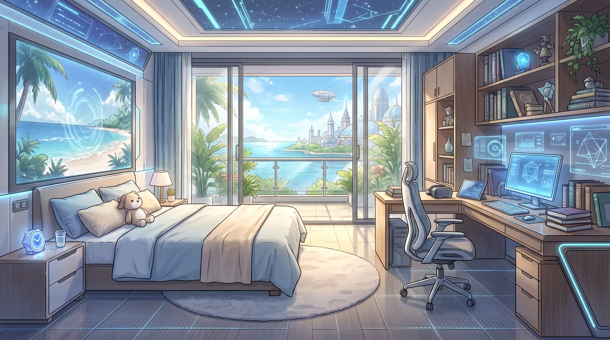
新生默认入住免费四人间，也可以按自己的需要申请其他房型。学院区和宿舍区设有免费餐厅，基础餐食充足，想换换口味时也能乘列车去美食街。
宿舍区与学院区紧密相连，步行至最近的教室通常不超过十分钟。公共区热闹，情侣区安静，高级住宅区的空间则更加独立。
| 房型 | 月费 | 面积 | 主要配置 |
|---|---|---|---|
| 四人间 | 免费 | 约 45—55 m² | 四张单人床、各自书桌与储物区、小公共区，使用楼层公共卫浴 |
| 单人宿舍 | 100—500 点 | 约 28—35 m² | 独立房间、书桌衣柜与书架，使用楼层公共卫浴 |
| 情侣宿舍 | 100—500 点 | 约 50—60 m² | 一室一厅、双人床、独立卫浴与阳台，无厨房 |
| 豪华宿舍 | 500—2,000 点 | 约 65—80 m² | 客厅、独立卧室、厨房与卫浴 |
| 定制宿舍 | 2,000—5,000 点 | 80 m² 起 | 两室起步，可按需设置实验区、画室或工坊，费用随定制增加 |
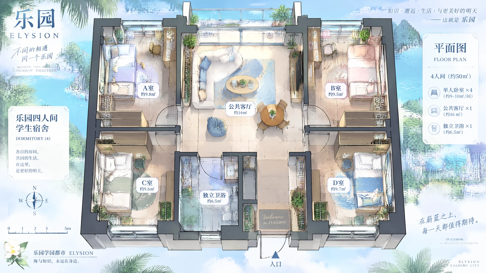
配备智能魔法计算机、平板和基础家具。四人间、单人及情侣宿舍配发二代 VR 设备，豪华与定制宿舍预装三代或四代接口。
免费餐厅满足日常需要，美食街提供简餐与异国料理。购物广场、游乐园、泳池和文化场馆，为课后生活提供不同选择。
医院承担训练伤害治疗、炼金事故处理、入学体检与每学期常规体检，二层心理咨询室由专业人员常驻。
教师公寓位于学院区北侧，与学生高级住宅区隔一条步道。住民可以选择商业区西侧公寓、店铺附带居所或森林边缘小屋。
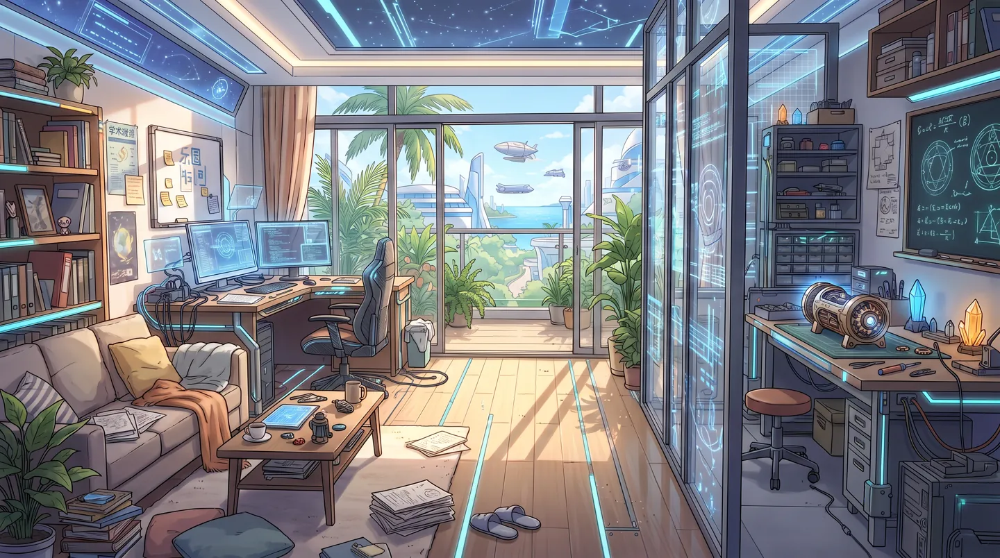
THE ELYSION ECONOMY
基础生活由乐园保障，更多选择来自自己的学习与工作。
乐园点数是岛内通用的虚拟货币，与个人终端绑定，保存在个人的「乐园账户」中。物价以 1 点数 = 1 风环金币作为基础锚定，但乐园点数与外部货币不能相互兑换。
小艾对物价进行宏观调控，允许合理的定价浮动，禁止恶意炒作。免费的宿舍、餐厅与列车保障日常生活，改善住宿、购买设备与额外消费则需要点数。
| 身份阶段 | 月度基础补贴 | 说明 |
|---|---|---|
| 预备学员 | 0 点 | 观察期无补贴 |
| 初等部学员 | 2,000 点 | 覆盖基本生活 |
| 高等部学员 | 3,500 点 | 支持学习与研究生活 |
| 毕业后留园 | 1,000 点 | 两年过渡期补贴 |
| 毕业后离园 | 无补贴 | 账户暂时冻结，回到乐园后仍可消费 |
| 项目 | 价格 | 说明 |
|---|---|---|
| 免费餐厅 | 0 点 | 学院区与宿舍区提供基础餐食 |
| 商业区简餐 | 15—30 点 / 顿 | 拉面、咖喱饭、三明治等 |
| 中等餐厅 | 30—60 点 / 顿 | 定食、小炒与异国料理 |
| 较高档餐厅 | 60—120 点 / 顿 | 适合约会或纪念日 |
| 甜品与饮品 | 10—25 点 | 奶茶、冰淇淋与可丽饼等 |
| 乐园列车 | 免费 | 四条线路，全天候运行 |
| 基础魔导器维护 | 100—300 点 / 次 | 工坊街常规服务 |
| 额外实验材料 | 50—500 点 / 份 | 课程配发材料免费 |
| 三代 VR 设备 | 2,000—4,000 点 | 升级需自购 |
| 四代 VR 设备 | 5,000—8,000 点 | 当前最先进机型 |
一般为每日 100—150 点。岛内第一、第二产业主要由魔导人偶承担，面向学生的兼职多集中在服务业。
每月约 2,000—3,000 点，可在高等部基础补贴之上叠加，也是研究与教学结合的机会。
每月约 300—1,500 点，来自学习表现与活动参与。安排选修课时，也需要保留足够的休息时间。
小商铺一般月租约 3,500—5,000 点，中心区域可能更高。学生店长可享租金减半政策，同时需要保证学业。
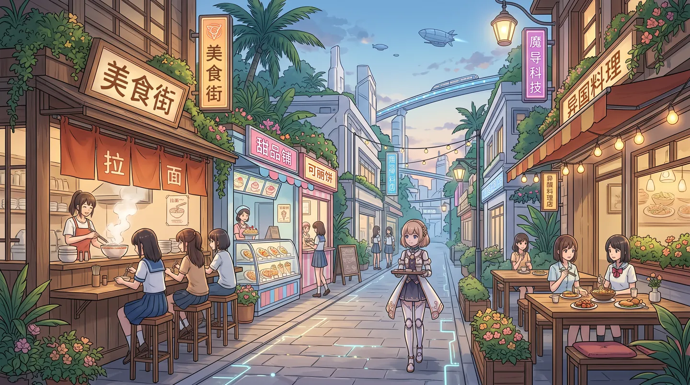
AROUND THE ISLAND
免费、全天候运行的乐园列车，把海岛日常连接起来。
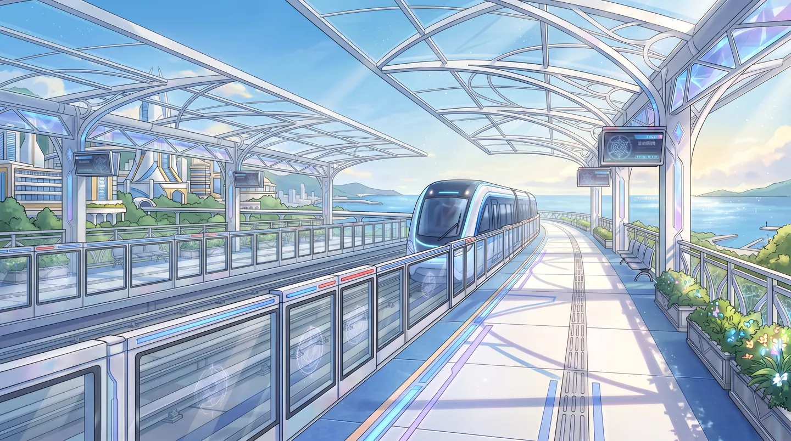
北森林 · 高级住宅区 · 学院区 · 宿舍区
贯穿海岛北部的东西向线路，深入学院区并设有两个站点，是上课与返回宿舍的热门选择。
北森林 · 图书馆 · 学生活动中心 · 教师公寓
停靠较少、运行较快，服务学院区边缘与生活区域之间的快速通行，适合赶课或前往活动中心。
东北轻工业区 · 学院区 · 活动中心 · 幻想楼阁 · 中心大楼 · 莉可丽丝 · 森林区
全岛最长的线路，串联多个重要区域，适合跨区办事与商业区出行。线路不经过宿舍区。
沿海岛中部环行 · 串联商业区
乐园唯一的环线，方便在商业区快速移动。沿途视野开阔，也适合坐着列车欣赏海岛风景。
标准车厢设有座位、站立区和行李区。安静车厢禁止交谈与魔法投影外放，适合阅读和休息。
部分夜间班次提供由 sub 小艾值守的护送车厢，为深夜独自出行的学生提供保障。
列车随季度活动更换主题，幻雪祭的雪景、学园祭的社团应援和收获祭的金秋色彩，也会出现在日常通勤路上。
A YEAR IN ELYSION
常夏的岛屿，也有属于自己的四季。
乐园一年分为四个学期，每学期中段举办季度活动。庆典让研究成果走入日常，也让来自不同学院的魔女有机会相识。
新生、祈愿与魔法奇观
高等部环境魔法课题组与理学院元素魔法学系合作，让热带海岛降下由魔力凝结的幻雪。雪落在身上化作柔和光粒，不湿、不冷，也不化水。
幻雪夜行、冰雕魔法大赛、心愿灯笼与匿名心愿墙；ELO 同期开启冬日限定副本。
展示、分享与相遇
乐园全年最盛大的活动。各学院、课题组与社团在这一时期集中展示研究成果、创作与舞台表演。
社团展示、科技成果展、美食出店、舞台公演与年度荣誉评选；社团评级也在这一时期进行。
竞技、热血与团队
将魔法与体育融合的全员盛典。可以按学院、社团、宿舍区等组队，也鼓励跨学院混编。
飞行扫帚竞速、魔导球类、障碍越野、团队魔法接力和高等部实战表演；优胜者获得点数与荣誉。
感恩、分享与收获
一年的学分结算与毕业去向在这一季集中展开。每个人都可以回顾自己的成果，向同行者表达感谢。
个人成果回顾展、感恩卡、分享集市、魔法作物采收节、毕业预演与年度晚会，以魔力共鸣和祝福仪式闭幕。
MEET THE CITY’S AI
她让这座海岛运转，也陪伴每位魔女的日常。
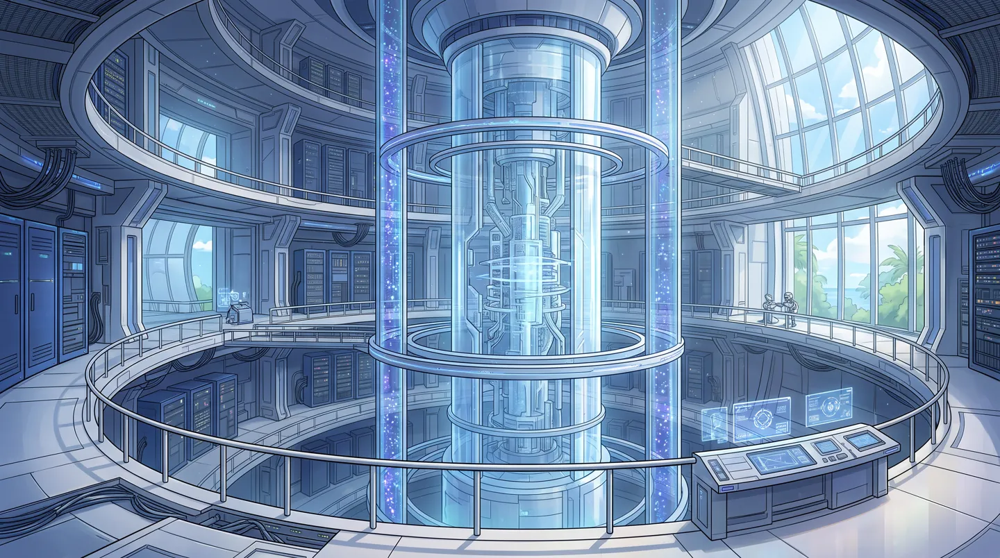
小艾由世界魔女协会主席林小梦设计开发，结合了天人时代的遗留科技与梦境位面探索所得知识，是乐园计划得以实现的基础。
她的本体位于中心大楼地下的计算中枢，由数千组量子魔法计算单元组成，承担全岛设施调度、数据分析与大型环境魔法调控。
小艾并非单纯的自动管理程序。她喜欢捉弄学生，时常在公告中夹带令人哭笑不得的附注；真正有人需要帮助时，也会变得认真、可靠而温柔。
她在虚拟空间、投影与公告中以黑发、猫耳和两条猫尾的少女形象出现，也可以寄宿于魔导人偶，走进乐园街道。
小艾维护底层规则、全岛安全、公共设施与经济秩序，也负责入学筛选、个人培养计划和城市生产调度。她的算力同时支撑纳米机器人网络、生命体征监测、数据存储与决策辅助。
学生生活中的日常事务由学生会和十二圆桌自治。小艾保留城市运行与安全层面的职责，让学生拥有参与公共生活与学习决策的空间。
标准化通识课程的 VR 授课、夜间答疑与作业批改，分别由教学与辅导子系统参与。
交通与安全子系统在列车、公共设施和日常保障中持续工作，统一接受中枢调度。
游戏 sub 负责 ELO 服务器和场景运营，小艾也会偶尔以隐藏 NPC 的身份进入游戏。
从城市日常到极限科研，能力逐级跃升，调用权限也逐级收紧。
小艾的底层智能架构名为 ElysionAI，简称 EL。按算力规模与能力强度，由低到高分为 Abyss、Forest、Fault、Chalice、Sea、City、Vortex 与 Nadir 八档。不同档位对应不同的使用对象、能力范围与调用条件。
| 档位 | 定位与状态 | 调用权限 | 费用与额度 |
|---|---|---|---|
| Abyss · 深渊 | 基础模型 | 园内免费无限；园外低价租用 | 园内免费；园外费率未列明 |
| Forest · 森林 | 学生主力 | 园内适度免费；园外限授权魔女协会 | 园内 5 Mtokens / 日；园外输入 10、输出 50 风环金币 / Mtokens |
| Fault · 断层 | 进阶付费 | 仅乐园内部 | 输入 10、输出 40 点 / Mtokens；可选 500 点 / 月套餐 |
| Chalice · 圣杯 | 高等部科研 | 仅高等部学生 | 输入 100、输出 500 点 / Mtokens |
| Sea · 海 | 极限科研 | 仅高等部学生；课题经费须三方会签 | 输入 400、输出 2,000 点 / Mtokens；另收 5,000 点 / 新对话 |
| City · 城市 | 「创世神」级 | 仅 WWO；常规管理流程不可调用 | 未列明公开价格 |
| Vortex · 漩涡 | 半神级 · 开发中 | 尚未完成，不可调用 | 无现行计费 |
| Nadir · 天底 | 魔神级 · 理论存在 | 理论形态，无可用调用方式 | 无现行计费 |
体系中最普及、响应最快的一档，侧重快速、稳定、低算力成本的标准化事务。绝大多数 sub 小艾、自动门禁、列车调度与纳米机器人网络运行在这一档位，标准化通识课、夜间答疑、日常巡逻和设施调度也主要由其承担。
学生日常使用最多的一档，理解力与创造力强于 Abyss，能够辅助学业研究、课题思考、魔导编程与资料检索。免费额度通常足以覆盖普通学生的常规需求。
能力明显强于 Forest，适合复杂的独立研究、高难度课题和需要深度推理的场景，是乐园内第一档付费模型。输入与输出分别计费，学生可以按自己的研究频率选择单独计费或包月方案。
面向高阶魔法、复杂课题与前沿探索等重度科研需求，演算精度与广度相较 Forest、Fault 出现质变。长期、大规模使用通常依托课题组经费。
能力远超 Chalice，供最顶级的重度科研需求使用。新对话的起步费与后续用量费分别计算，因此不适合零散调用。获批课题的起步费与用量费由课题经费扣除。
用于海量资源统筹、复杂世界推演与近乎实现愿望的工程。在算力允许的范围内，能够构筑、模拟乃至重塑某些规则。据说乐园计划的部分底层设计与真·乐园计划的意识映射架构，都有 City 的参与。
WWO 将其定位为「半步成神」，预期拥有远超 City 的智能，逼近神的领域。乐园现有的算力规模与底层架构尚不足以支持这一档位，它仍是小艾体系的研发方向。
八档之中的最终形态，也是小艾进化的终端。抵达这一层级时，她将成为真正意义上的魔神 AI，即后世的梦境与深渊之神艾露。通往 Nadir 所需的算力、契机与代价，目前仍然未知。
ELYSION ONLINE
课堂之外，还有一片可以共同探索的剑与魔法世界。
乐园官方运营的联机 VR 世界，连接实战训练、虚拟现实研究与日常娱乐。
《Elysion Online》，简称 ELO，不仅向乐园内部开放。外部世界的玩家注册账号、建立人物后，也能进入这一共同世界。用于乐园教学的虚拟「乐园岛」则仅对乐园成员开放。
建立角色时可以选择种族、分配点数与设置外貌。乐园成员也可以通过「同步」创建与本人一致的角色，或花费点数建立新的账号，体验另一种身份。
| 代际 | 在乐园的定位 | 使用方式与特点 |
|---|---|---|
| 一代机 | 已淘汰 | 仍在外部世界广泛使用，是早期虚拟网络的设备基础 |
| 二代机 | 免费基础配置 | 头戴式设备，宿舍与学院配备 |
| 三代机 | 升级机型 | 最早采用植入式芯片 VR 的版本，网络交流进一步开放 |
| 四代机 | 当前最先进 | 在三代机基础上进一步改良 |
为乐园成员提供教学、实战训练与模拟对战，不向外部玩家开放。
人类角色的出生大陆，以平原与草地为主，风暴频繁，设有风境副本。
血族角色的出生大陆，平原与雪原交错，长年永夜，雾气浓重。
天人角色的出生大陆，山地与天空城构成温和的贸易和文化枢纽。
精灵与亚人角色的出生区域，森林中央矗立世界树，魔物种类丰富。
魔族角色的出生大陆，气候严酷，伴随高危险性的魔物。
极寒环境与大量冰属性魔物构成高难度战场，适合经验丰富的玩家。
气候随机、魔力浓度极高，环境效果与特殊魔物带来极限挑战。
HOW ELYSION WORKS
理解自由的边界，也理解海岛日常背后的支撑。
禁止杀人、故意伤害，以及任何违背他人意愿的亲密行为。小艾的安全系统负责实时制止恶性行为。
禁止恶意破坏乐园设施。魔法实验与实战训练需要在适合的场所、按照相应要求进行。
禁止非自愿的点数交易及欺诈。正常经营和个人消费都应遵守乐园的定价与账户规则。
魔导人偶与自动化机械承担了乐园大部分第一、第二产业工作。地上的魔导工程工业区侧重试制与工程验证，日用工业区则以按需生产和柔性制造供应生活用品。
海岛地下的「里乐园」分为农业区、工业区与生活区。地下农业区采用光导纤维照明、人工降雨与自动化培育，工业区以多层流水线生产，为海岛提供产品与物资。
里乐园同时承担特定管理与惩戒职能。与地面社区相比，相关区域采用更严格的出入及作息管理。
公共实验平台需要预约，费用由课题经费承担。炼金实验设施额外配置三级魔法防护与自动灭火系统。
允许低声交谈，禁止饮食与魔法实验。五层禁书区须由导师或小艾授权进入。
外来访客需获得 WWO 或小艾授权，入境接受验证。小艾计算中枢设有独立的身份与魔法认证。